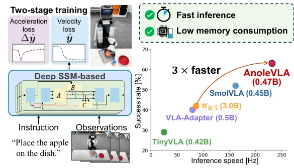
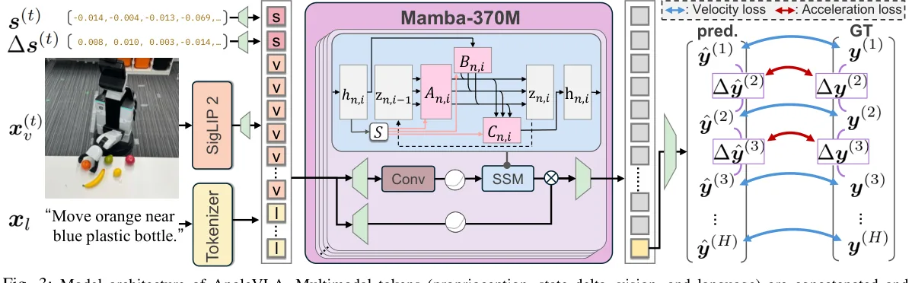
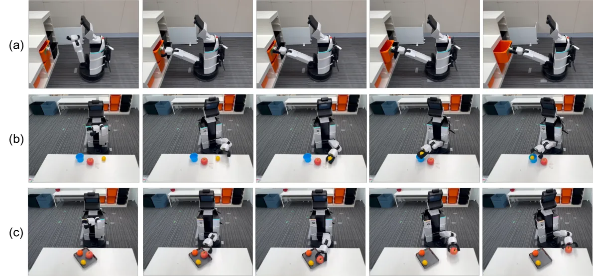
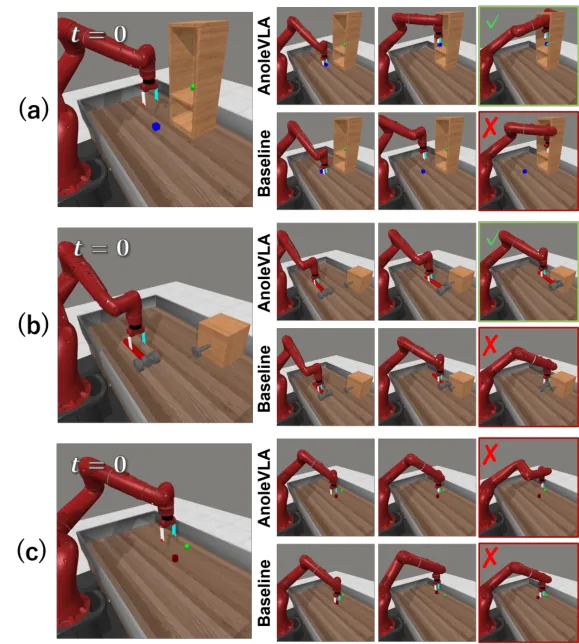

💡速记层 · 思想 / 逻辑 / 方法
默认读完就走的一层——只讲思想、逻辑、方法；效果只作验证。要核对原文/钻细节再看下面的「深读层」。
- VLA 把视觉/语言/状态 token 拼成长序列；Transformer 自注意力 O(L²) 在长序列下成为关键瓶颈，制约实时部署。
- Deep SSM (Mamba) 用递归隐状态以 O(L) 处理序列，天然适合增量式实时感知融合。
- Mamba 与 Transformer 共享 token 空间 → 可即插即用替换 backbone，保留上游多模态 tokenization 和下游 action decoding 管线不变。
- 机器人轨迹的「速度」和「加速度」都要约束才能平滑 → 两阶段训练：先拟合速度（位移 delta），再加速度 loss（速度 delta）精细化时序一致性。
- 在 50 episode 的小数据集上，大模型 π0.5 (3B) 过拟合 + 领域迁移失败；轻量 Mamba 模型样本效率更高，反而超越。
在 Meta-World 仿真 + Toyota HSR 真实机器人物理实验两套评测中，AnoleVLA 均超越所有同量级基线（SmolVLA、TinyVLA、VLA-Adapter）以及大 10 倍的 π0.5；同时推理速度是 π0.5 的 3 倍。消融证明加速度 loss 带来 +4.73 pts。
想看具体数字（点开）
- Meta-World 平均成功率：AnoleVLA 67.85% vs SmolVLA 57.33% vs π0.5 43.80%
- Real-world 平均成功率：AnoleVLA 63% vs SmolVLA 52% vs π0.5 42%
- 推理速度：AnoleVLA 216 ms/chunk vs SmolVLA 309 ms vs π0.5 578 ms
- Open drawer（接触密集）：AnoleVLA 75% vs SmolVLA 55%（平滑轨迹的核心优势场景）
- 加速度 loss 消融：无加速度 loss 63.12% → 有 67.85%（+4.73 pts）
- 失败分析（20例）：位置识别错误 10例 / 抓取点预测错误 6例 / 动作不完整 4例

Track A（移动操作 VLA）直接命中：这正是轻量化 VLA 在真实移动操作机器人（Toyota HSR）上部署的样本。Mamba backbone 替换思路、两阶段平滑训练、以及「为什么大 VLA 在小数据集上会输给轻量模型」的分析都值得借鉴。Track B（足式先进算法）不相关——本文不涉及 locomotion 或步态控制。本文 NEW（2026-03） 且来自学术组，是同类轻量 VLA 中较新的一篇，代表效率优先路线。
◆核心观点 · 证据
每条 = 中文论点 + 📍页/节 + 🔤逐字原文(Ctrl-F 锚点) + 🀄译文 + 💡解读。
deploying them on physical robots remains challenging because their backbones require substantial memory and compute at inference time.
Transformer self-attention scales quadratically with sequence length, which becomes problematic because VLAs typically concatenate vision, language, and robot-state tokens into a single sequence.
we propose AnoleVLA, a lightweight VLA that leverages a deep state space model (deep SSM) for efficient multimodal sequence modeling. By leveraging the linear computational complexity of deep SSMs, this model addresses the inference bottlenecks.
Because both Mamba and transformers operate as causal sequence models over a shared token space, Mamba can seamlessly replace the transformer backbone while preserving the upstream multimodal tokenization and downstream action decoding pipelines.

We place proprioceptive tokens at the beginning of the sequence so that, under Mamba's causal recurrence, the hidden state is first conditioned on the agent's state before the integration of visual and linguistic information.
We adopt a linear projection as the action head because the Mamba backbone already extracts a sufficiently expressive representation at the final token position through its recurrent aggregation of the full input sequence.
In trajectory generation, consistency in both velocity and acceleration is important for smooth execution on real hardware. Motivated by this observation, we design a two-stage loss that supervises both quantities.
Table III shows that model (i) achieves a success rate 4.73 points lower than model (ii). This result suggests that the introduction of the acceleration loss alongside the velocity loss enabled the generation of smoother and more stable trajectories, which effectively improved overall performance.
AnoleVLA outperformed SmolVLA, the strongest baseline, by 10.52 points, and surpassed π0.5 by 24.05 points. These results demonstrate that AnoleVLA outperformed the baseline approaches while maintaining a competitive or smaller model size.
AnoleVLA achieved an average success rate of 63%, whereas the values of VLA-Adapter, TinyVLA, and SmolVLA were 40%, 29%, and 52%, respectively. Consequently, AnoleVLA outperformed SmolVLA, the strongest among the small-scale VLAs, by 11 points for the average success rate.

There are two main reasons for this significant performance gap. First, the small training dataset of only 50 episodes per task made it difficult to fine-tune π0.5. Although π0.5 is heavily pre-trained, massive architectures with 3B parameters generally suffer from low sample efficiency with such limited data, making effective adaptation challenging without overfitting. Second, a substantial domain gap exists regarding visual observations. The pretraining data for π0.5 mainly contains table-top manipulation from fixed viewpoints; however our tasks require whole-body manipulation with continuously changing viewpoints.
Position recognition error was the most frequent failure mode. Manual inspection of the failed episodes suggests that the model often generated grasping motions toward incorrect regions or empty space, which indicates inappropriate localization of the target object from visual observations.

⎘开源状态
论文正文（2026-03，arXiv:2603.15046v1）明确承诺代码与视频，但截至当前项目页处于「审稿中」状态，链接尚未激活。
- 代码
- 待发布 项目页 anolevla-8z7l8.kinsta.page 说明「We will set the links as soon as the paper is published.」——承诺发表后开放，当前不可用
- 权重
- 未公开 无已发布的 checkpoint
- 数据
- 未公开 250 episode 物理实验数据 + Meta-World splits 均未释出（Meta-World 本身公开，但自采物理数据未发布）
- 视频
- 承诺 项目页预留了视频位，内容待发表后上线
Our code and videos are available at this URL
论文 arXiv 版本可直接获取（2026-03-16）。代码一旦发布可关注项目页更新。本文作者来自庆应义塾大学，与 Physical Intelligence / NVIDIA 无从属关系，代码规模预期较小、偏研究原型。
⚖批判 · 评级
① 效率路线的清晰 case study：Mamba 替换 VLA Transformer backbone 的思路简洁，O(L²)→O(L) 的理论动机与工程实现都交代清楚。② 真实机器人验证：Toyota HSR 上的物理实验覆盖 5 类任务 × 20 trials，不仅仿真。③ 两阶段平滑训练是独立贡献，对任何需要「轨迹平滑」的操作策略均有参考价值。④ 定量揭示了「大 VLA + 小数据 + domain gap = 失败」的规律——对如何选型有指导意义。
① 物理实验规模小：每任务仅 50 episode 训练 + 20 trials 测试，5 个任务场景，泛化结论有限。② 无 OOD 评测：物理实验固定在 WRS2020 标准环境中，未测未见新场景/新物体的泛化能力。③ Mamba 因果性的代价：位置识别错误（50% 失败来源）可能与 Mamba 缺乏全局注意力直接相关，但论文未对比在同场景 Transformer 模型的相同指标。④ 代码当前未公开，结果无法复现。⑤ 未与 SmolVLA、TinyVLA 用完全相同训练设置（部分结果引自原文，不是本文自训）。
评级：Valuable 针对「轻量 VLA 在资源受限移动操作机器人上的部署」提出了完整且实验扎实（有物理机器人）的解决方案，Mamba+两阶段训练的组合有新意，但泛化范围和数据规模仍属小型研究原型。